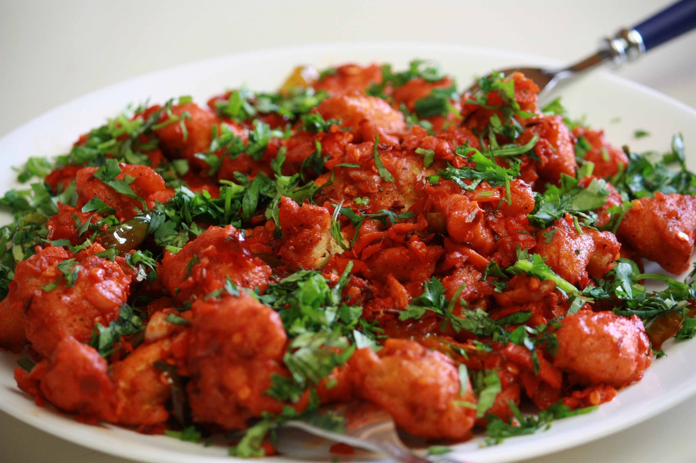

Spicy Chicken Curry

Ingredients
500g
chicken
2
onions, finely chopped
2
tomatoes, finely chopped
2 tablespoons
curry powder
1 teaspoon
red chili powder
1 tablespoon
ginger-garlic paste
Instructions
Step 1:
Heat oil in a pan and sauté onions until golden brown.
Step 2:
Add ginger-garlic paste and sauté for a few minutes.
Step 3:
Add tomatoes, curry powder, and chili powder. Cook until tomatoes are soft.
Step 4:
Add chicken and cook until done. Serve hot.
Serving Suggestions
Enjoy with steamed rice or warm naan bread!